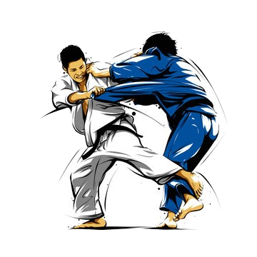
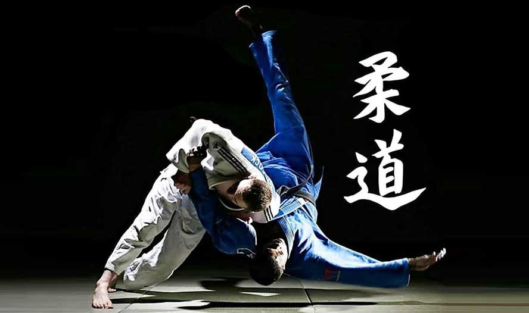
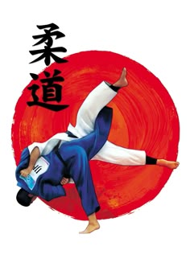

judo


Дзюдо — это современное японское боевое искусство и олимпийский вид спорта, основанный на принципах техники, баланса и использования силы противника против него самого.

Дзюдо было создано в 1882 году японским мастером Дзигоро Кано. Он разработал систему на основе древних техник дзюдзюцу, убрав опасные элементы и сделав акцент на безопасности и обучении.
